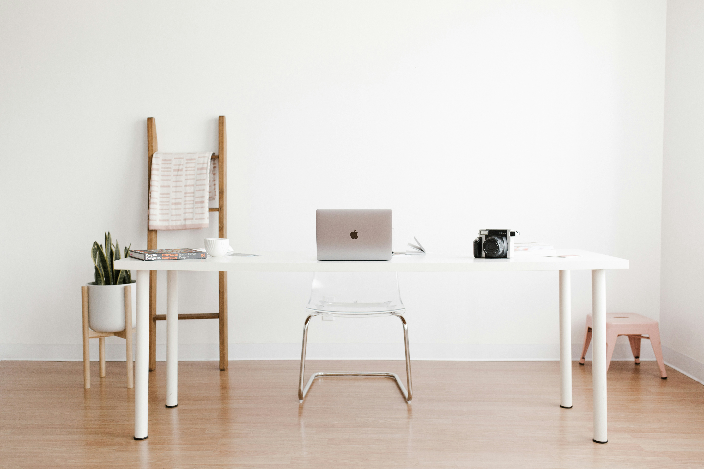
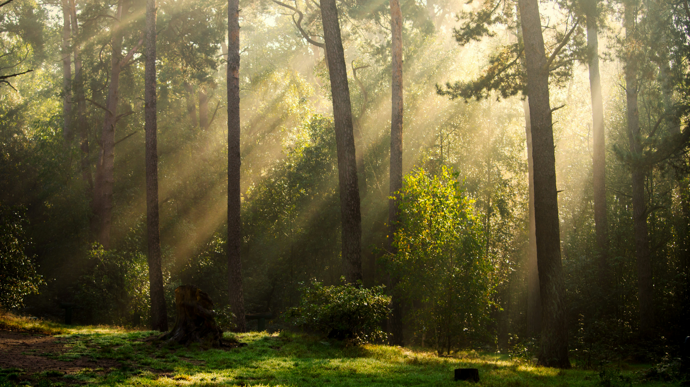

October 12, 2026
Finding Beauty in Every Journey
Sometimes the best adventures begin when we step outside our comfort zone and explore the world around us.
Read More →OUR LATEST STORIES
Ideas, experiences, and inspiration worth sharing.
October 12, 2026
Sometimes the best adventures begin when we step outside our comfort zone and explore the world around us.
Read More →
October 15, 2026
Learn to enjoy little moments, slow down, and create a more peaceful and meaningful everyday routine.
Read More →
October 18, 2026
Creativity grows when we give ourselves time and freedom to experiment with new ideas.
Read More →
October 21, 2026
Big achievements often begin with small daily habits. Discover how little changes can make a difference.
Read More →